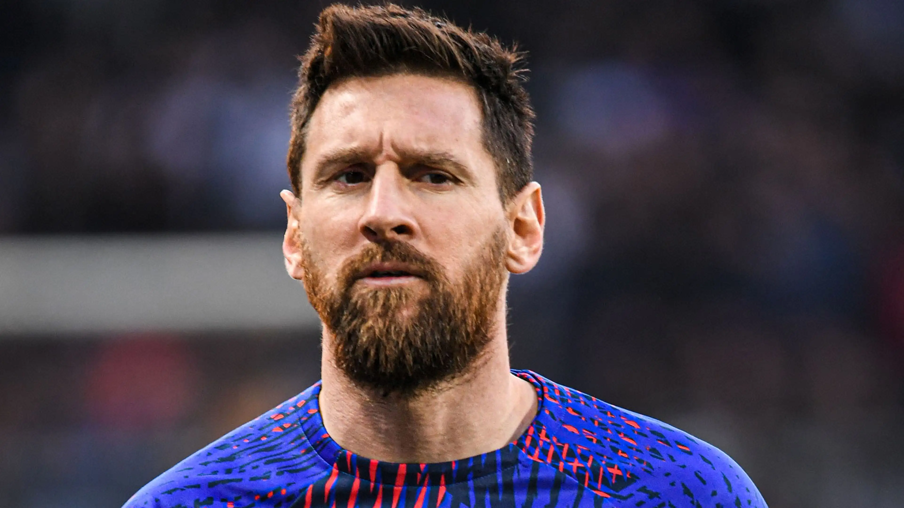
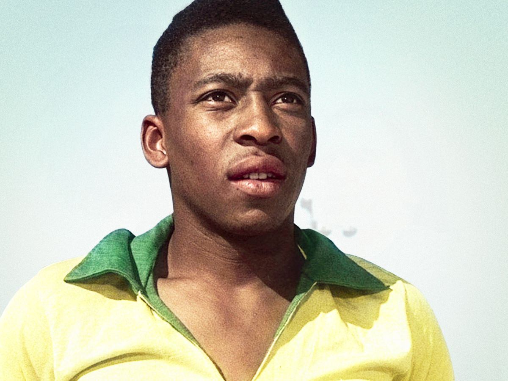
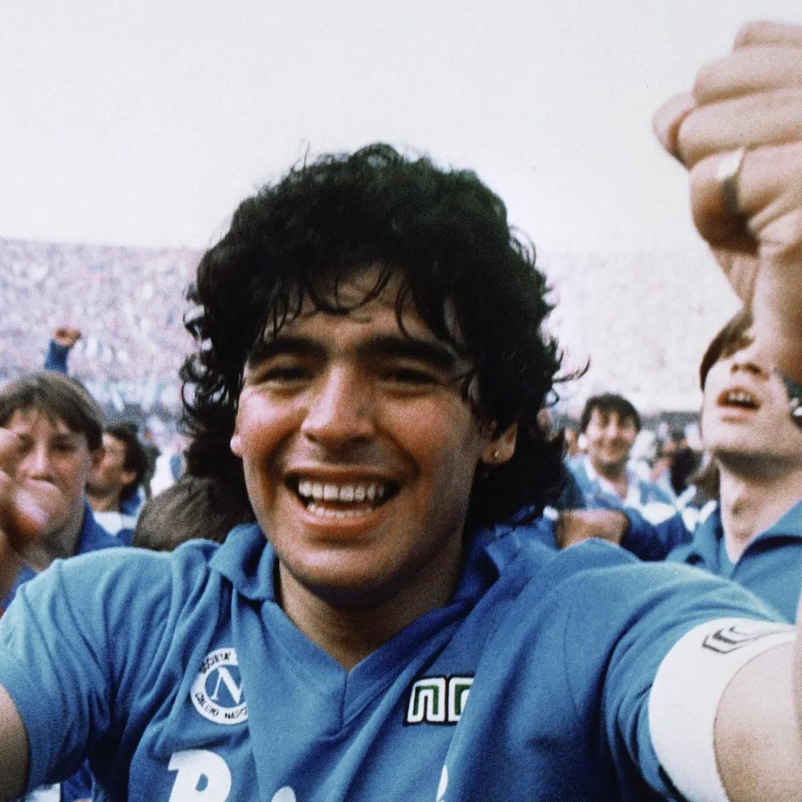

| Name |
About |
Picture |
| 1.) Lionel Messi |
- Argentine professional footballer
- Widely regarded as one of the greatest players in history
- Achieved remarkable success at FC Barcelona
- Exceptional technical skills: dribbling, passing, goal-scoring
- Led Argentina to victory in the 2021 Copa America
|
 |
| 2.) Pele |
- Pele is a Brazilian former professional footballer
- Also widely considered one of the greatest footballers of all time
- He played as a forward and achieved remarkable success with Santos FC and the Brazilian national team
- Pele won three FIFA World Cup titles with Brazil in 1958, 1962, and 1970, becoming the only player to accomplish this feat
- Known for his skill, agility, and prolific goal-scoring ability, Pele is celebrated for his incredible contributions to the sport
|
 |
| 3.) Diego Maradona |
- Diego Maradona was an Argentine professional footballer
- Once again this player is also regarded as one of the greatest players in football history
- He played as an attacking midfielder and achieved remarkable success with clubs like Barcelona and Napoli
- Maradona led the Argentine national team to victory in the 1986 FIFA World Cup, where he delivered standout performances and scored the famous "Hand of God" and "Goal of the Century" goals
|
 |
| 4.) Christiano Ronaldo |
- Cristiano Ronaldo is a Portuguese professional footballer
- Widely regarded as one of the greatest players of his generation
- Ronaldo has achieved remarkable success with clubs like Sporting CP, Manchester United, Real Madrid, and Juventus.
- Ronaldo has won numerous individual awards, including multiple FIFA Ballon d'Or titles, and has led both Portugal and his club teams to major victories in international and domestic competitions
|
 |
| 5.) Kylian Mbappe |
- Kylian Mbappe is a French professional footballer
- He is considered one of the most promising young talents in the world of football
- Mbappe rose to prominence while playing for AS Monaco before moving to Paris Saint-Germain (PSG)
- He played a crucial role in France's victory in the 2018 FIFA World Cup, scoring four goals and winning the tournament's Best Young Player award
|
 |
| 6.) Johan Cruyff |
- Johan Cruyff was a Dutch professional footballer and coach
- Cruyff played as an attacking midfielder and achieved remarkable success with clubs like Ajax and FC Barcelona
- He was a key figure in the development of "Total Football," a tactical system that revolutionized the sport
- Cruyff won three consecutive Ballon d'Or awards from 1971 to 1973 and led the Netherlands national team to the 1974 FIFA World Cup final
|
 |